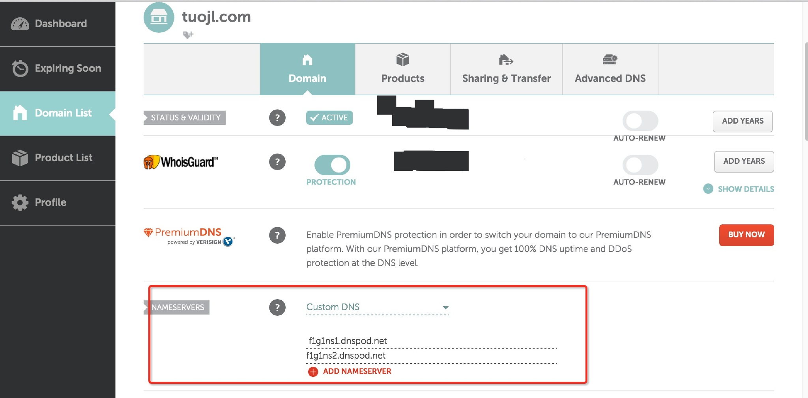
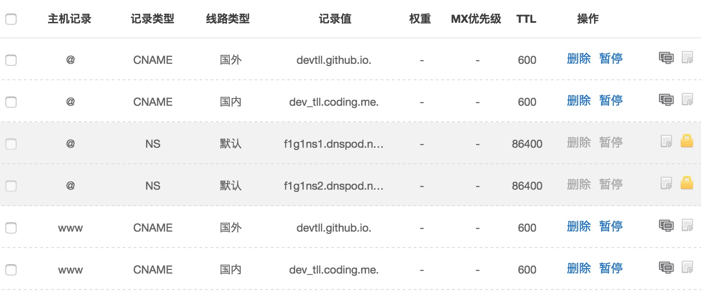

将Hexo博客同时托管到Github和Coding
Contents
之前只是将博客托管在 Github 上，但是天朝访问 GitHub Pages 真心很慢，有时候还不能访问，所以继续折腾一下吧。国内的话可以使用 GitCafe 来托管 (现在 GitCafe 已经被 Coding 收购了，可直接托管到 Coding ) ，因为 Hexo 支持多部署，所以可以将博客同时托管到 Github 和 Coding 上，国内线路解析到 Coding ，国外线路解析到 Github
配置 Coding
注册好 Coding 帐号后，需要配置下 SSH 公钥。因为之前使用 Github 已经将 SSH Key 生成了，可以直接拿来用。先进入文件目录
$ cd ~/.ssh
将 id_rsa.pub 里的内容全部复制并添加到你 Coding 帐号下的 SSH 公钥这个选项里，继续使用下面的命令来测试是否添加成功
$ ssh -T git@git.coding.net
如果显示 Hello xxx You've connected to Coding.net by SSH successfully! 则表示配置成功
创建项目和配置
创建项目时唯一要注意的就是项目名称一定要和你的用户名一样并且项目选择公开，创建成功后接下来就要修改博客根目录下面的 _config.yml 文件。下面是我的配置
# Deployment
# Docs: https://hexo.io/docs/deployment.html
deploy:
type: git
branch: master
repository:
github: git@github.com:Devtll/devtll.github.io.git
coding: git@git.coding.net:dev_tll/dev_tll.git
最后使用命令把博客同步到 Coding 上面：
$ hexo clean;hexo g;hexo d
开启Coding Pages服务
部署博客方式有两种，第一种就是 Pages 服务的方式，也推荐这种方式，因为可以绑定域名，而第二种演示的方式必须升级会员才能绑定自定义域名。 Pages 方式也很简单 就是在博客根目录 source/ 需要创建一个空白文件，至于原因，是因为 coding.net 需要这个文件来作为以静态文件部署的标志。就是说看到这个 Staticfile 就知道按照静态文件来发布
$ cd source/
$ touch Staticfile #名字必须是Staticfile
分支选择 master ，因为前面配置的分支是 master ,因此开启之后，也需要是 master ，开启后就可以直接访问了，比如我的是 dev_tll.coding.me
绑定域名
我用的是 DNSPod 进行域名解析，需要在域名注册商修改 DNS。我是在namecheap上注册的域名，所以下面介绍 namecheap 的 DNS 修改方式。见下图：

在 Custom DNS 下添加两个 DNS , f1g1ns1.dnspod.net 和 f1g1ns2.dnspod.net ，点击保存，然后等待全球递归 DNS 服务器刷新（最多72小时），接下来需要在 DNSPod 添加记录

总结
忙活了大半天，到此为止，终于搞定同时在 Github 和 Coding 上同时部署了。访问速度也是唰唰唰的快。
Author devtll
LastMod 2016-05-02